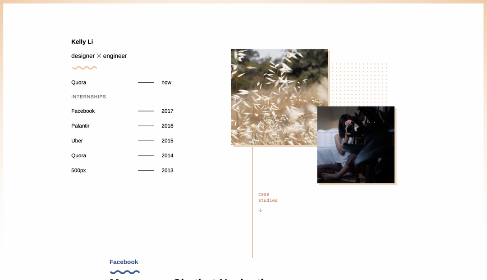
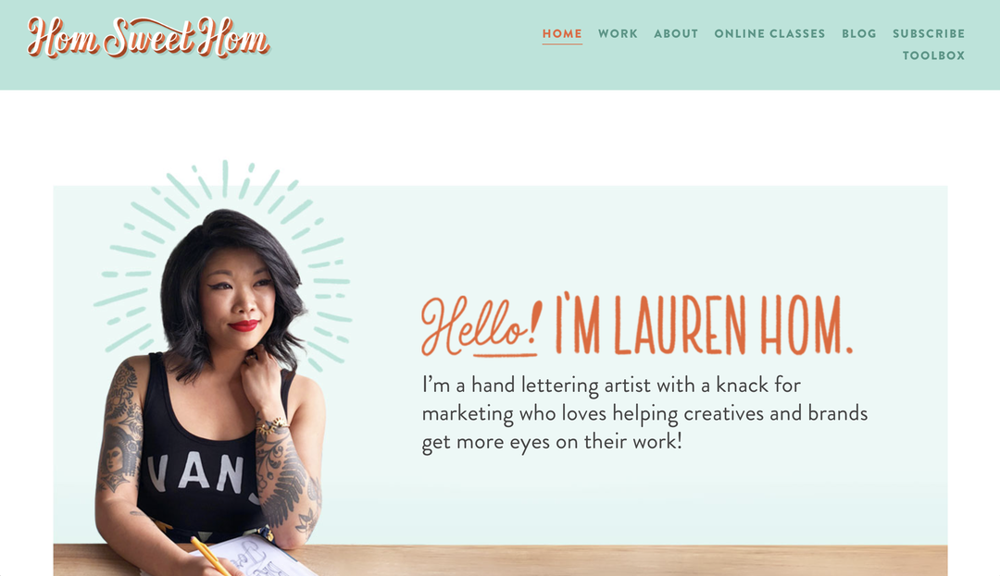
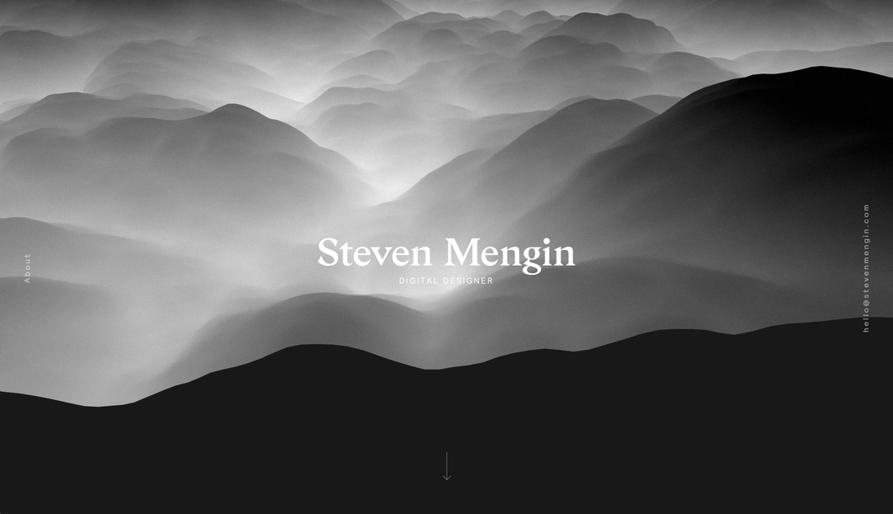
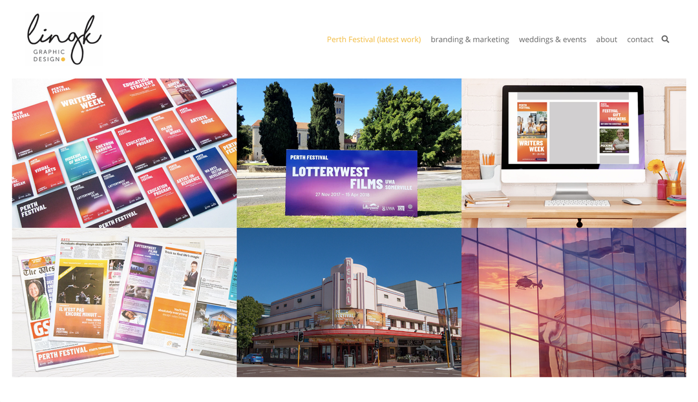
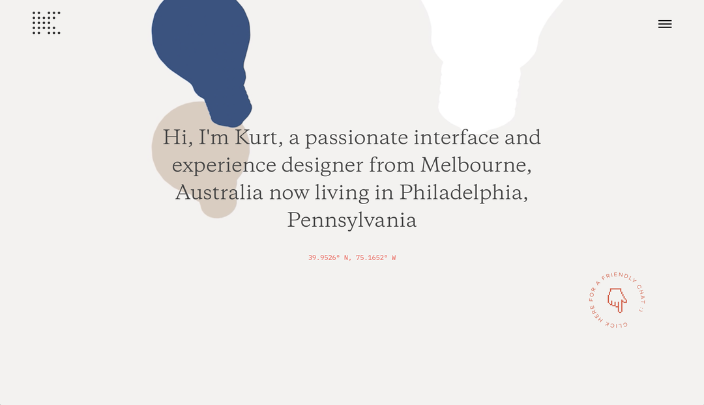

Portfolio Website Critiques

Kelly's website is very clean and simple. She uses a soft peach color which is very easy on the eyes. She also has two photos at the top that move around when you mouse over them. In addition, her site show cases her previous and current internships as well as her case studies. You are able to dive deeper into the details of her case studies by clicking "View Case Study". Overall, her website is well ordered and very effective.

Lauren's website is very eyecatching and well organized. She uses a soft mint green and orange color in her design and includes a number of images on the home page. Her home page is very well designed and gives the viewer a good sense of her and her brand. There are multiple places to navigate within her site and there is even a place where she offers online classes. Overall, her site is extremely well designed and very informative.

Steven's website is very dark and has a very contemporary feel. The site's main colors are blacks, greys, and whites. This gives it a very clean look but it is a little dark. When you first enter the site there is an eyecatching moving image of what looks like waves of smoke. I love the transitions you see as you scroll down to see very interactive examples of his work. Overall, the design of his website is very interactive and really intriguing.

Ling's website is another site with examples of her work on the main page. It is clear she's used the grid in design because of how well organized her site is. Because of the grid her site is very eyecatching. Also, I like how uniform everything is because within each header you click on they all have the same layout. In addition, I like how you are able to click on the example of her work in order to see more about the project. Overall, I think her site is very strong and informative.

Kurt's website is another site that is very simple. He has mainly everything of his homepage and you are able to click on the different projects to see more information regarding that project. I really like how he has designed his site. The only thing regarding this site I don't particulary like is the falling lightbulbs on the main page because they don't really correlate with anything. Overall though, I really love the transitions as well as the overall design.